I've never yet found a mail client that I really love. Outlook is ok in corporate environments. Gmail is probably the best I've used but I'm trying to move away from Google and free 3rd party hosted solutions. Roundcube is pretty good, I'm not a fan of PHP but most of the internet seems to run on it. I've run Rainloop for a while I like it. I actually think KMail and Kontact as a whole are very nice. I kind of wish they handled HTML email a bit more elegantly but with some tweaking they work well. The problem is they are desktop solutions and I'd like something I can access remotely. I use Mutt over ssh a bit and that works well enough.
So I though I'd give mailpile a go, I know it's not designed to run as a web service but it can.
The install guide is very well documented. I pretty much followed it verbatim although I tweaked a few things because I wanted it to run as a service.
I SSHed into my home box and forwareded port 33411
ssh example.com -L 33411:localhost:33411
Install the prerequisites
sudo apt-get install git gnupg openssl python-virtualenv python-pip python-lxml python-dev libjpeg-dev
Clone the Git Repo
sudo git clone --recursive https://github.com/mailpile/Mailpile.git /opt/mailpile
Create a mailpile user
For now we are going to give the user /bin/bash as a shell, but later we will change it to /usr/sbin/nologin
sudo useradd --system --shell /bin/bash --home-dir /opt/mailpile mailpile
Setup the virtual environment
Unfortunately it looks like mailpile only runs with Python 2.7 not Python 3+
# Set ownership of mailpile
sudo chown -R mailpile:mailpile /opt/mailpile/
# Change to the mailpile user
sudo su mailpile
# move into the newly created source repo
cd /opt/mailpile
# create a virtual environment directory
virtualenv -p /usr/bin/python2.7 --system-site-packages mp-virtualenv
# activate the virtual Python environment
source mp-virtualenv/bin/activate
Install the dependencies
pip install -r requirements.txt
Run mailpile
As a test we are going to start mailpile manually, once we are sure it's working we will make it a service.
./mp
If all has gone well you should now see a mailpile> prompt and if have forwareded the ports you should be able to browse to http://localhost:33411
Setup mail
The setup was very simple,
You are first greeted with a welcome screen where you select your language
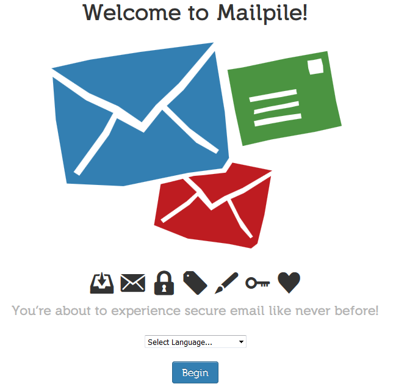
Next you choose a password
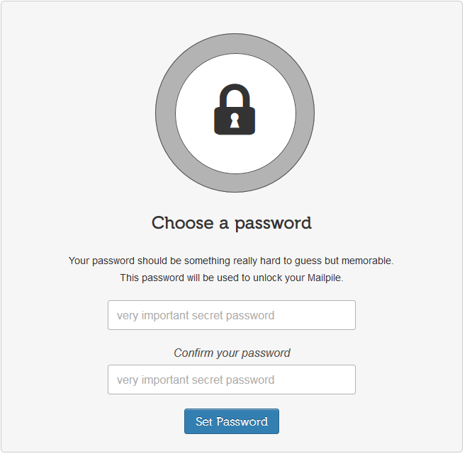
Click through to finish the setup
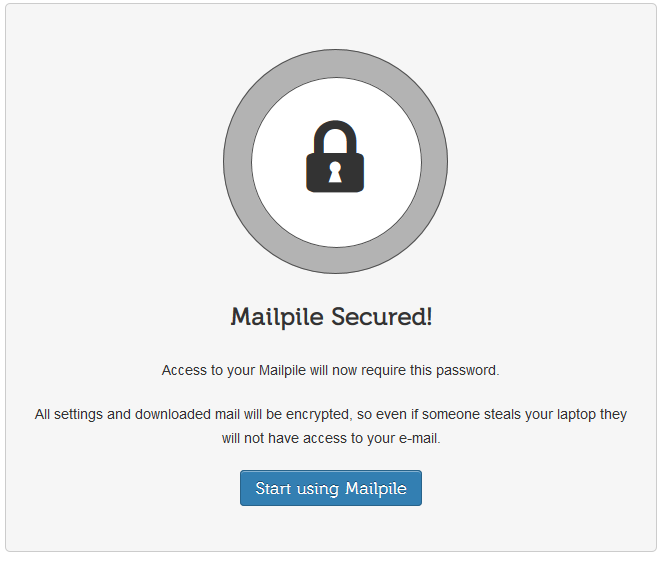
And you end up a login screen
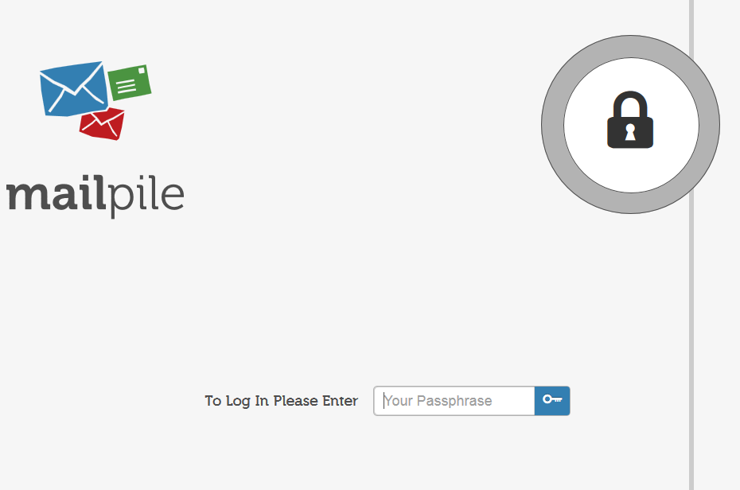
Once you login you are presented with a welcome screen.
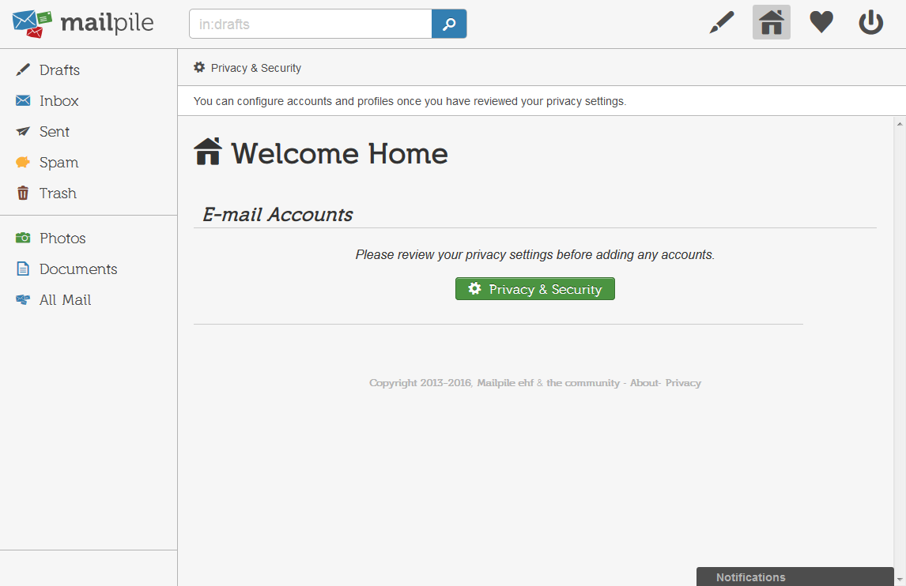
Before you can add an account you need to run through the privacy settings, I went with the defaults which were pertty good.
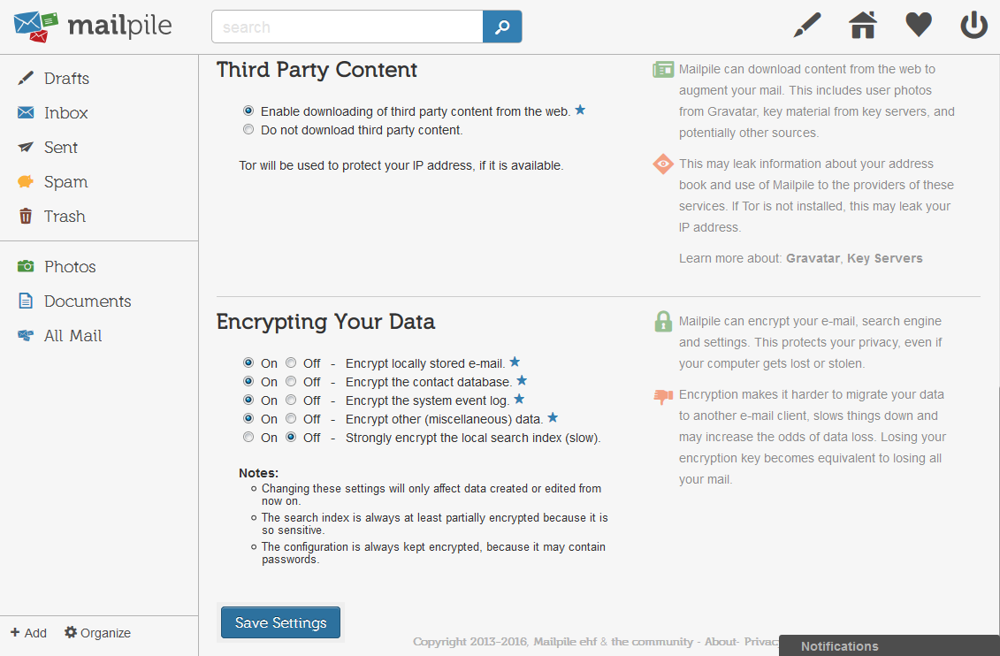
Then you go back to the welcome screen but this time you can add an account.
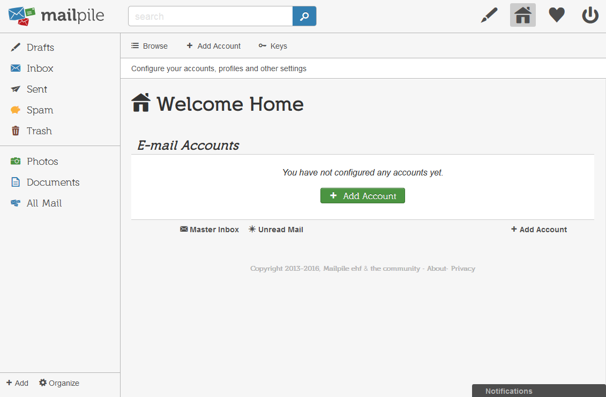
I added an account
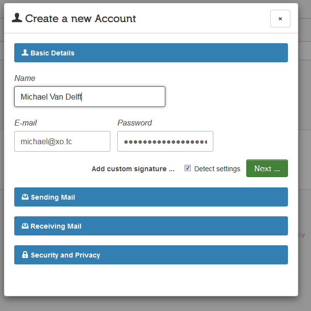
I went with the 'Detect settings' option to see how well that worked, it took a couple of minutes but got everything right. Later I also tried adding settings manually and that was pretty easy too.
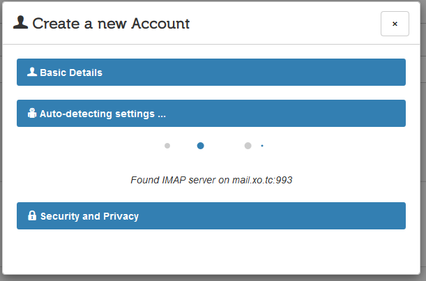
Lastly you setup your encryption options and your done.
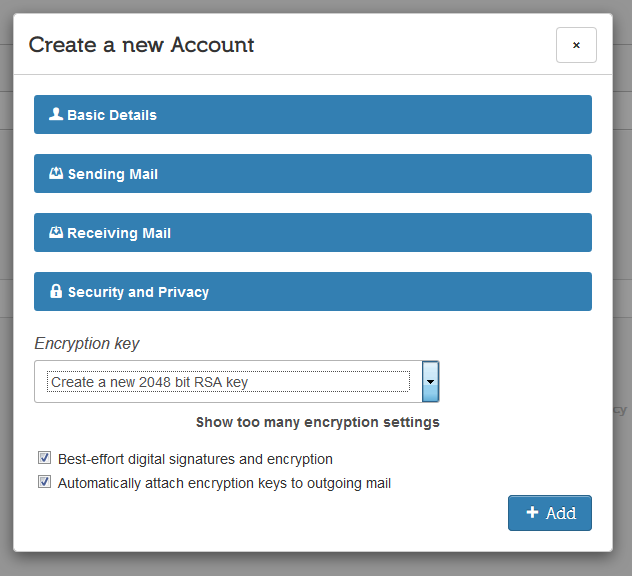
Now you can check your mail.
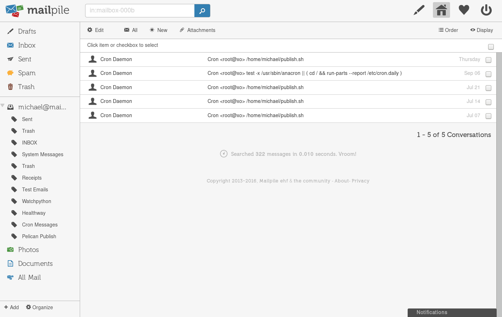
When I was setting up Mailpile I ran into issue 1578 and so no mail was showing up. Fortunatly there is a simple fix for that which will hopefully be merged soon.
I'm planning on running Mailpile under a subdirectory (e.g. example.com/mailpile) so in the mailpile terminal I ran set sys.http_path = /mailpile but that's not necessary if your planning on running it in the root of your domain.
mailpile> login
Your password:
mailpile> set sys.http_path = /mailpile
Elapsed: 0.001s (set: Updated your settings)
{
"sys.http_path": "/mailpile"
}
mailpile>
Make it a service
Press Ctrl + D to exit the mailpile cli, then type deactivate python virtual environment and exit to change back to your normal account.
sudo vim /etc/systemd/system/mailpile.service
[Unit]
Description=Mailplie Server
After=syslog.target
After=network.target
[Service]
Type=simple
User=mailpile
Group=mailpile
WorkingDirectory=/opt/mailpile
ExecStart=/opt/mailpile/mp-virtualenv/bin/python mp --www= --wait
# Give a reasonable amount of time for the server to start up/shut down
TimeoutSec=300
[Install]
WantedBy=multi-user.target
Enable and start the service
sudo systemctl enable mailpile.service
sudo systemctl start mailpile.service
Now that it's a service we can lock the user account down a bit more by giving it no shell.
sudo usermod -s /usr/sbin/nologin mailpile
Make it a website
As Mailpile is still in beta and they recommend you don't leave it open.
At the moment, we do not recommend exposing Mailpile directly to the wider Internet.
So I'm going to be setting mine up so you need a client certificate to access it. This isn't necessary but it's an extra layer of security and I'd recommend it. I've got a tutorial on setting up a personal certification authority and securing apache with client certificates if you want more information on how that works.
sudo vim /etc/apache2/sites-enabled/000-default.conf
Below is most of my apache2 config, but the important bits are under # SSL Client Certificates and # Mailpile
<VirtualHost *:443>
# Host settings
ServerName example.com
# SSL Settings
SSLEngine on
SSLOptions +StrictRequire
SSLHonorCipherOrder on
# Remove all, Add back only TLS1.2
SSLProtocol -ALL +TLSv1.2
# A fine selection of the choicest ciphers
SSLCipherSuite -ALL:ECDHE-RSA-AES256-GCM-SHA384:ECDHE-RSA-AES128-GCM-SHA256
SSLCertificateFile /etc/ssl/custom/example.com.crt
SSLCertificateChainFile /etc/ssl/custom/1_intermediate.crt
SSLCertificateKeyFile /etc/ssl/private/exmple.com.key
Header always add Strict-Transport-Security "max-age=31536000"
# HPKP: HTTP Public Key Pinning
# https://scotthelme.co.uk/hpkp-http-public-key-pinning/
# https://developer.mozilla.org/en-US/docs/Web/Security/Public_Key_Pinning
Header always set Public-Key-Pins "pin-sha256=\"f5uthPZ21VOlA6Bye2yvoe+6a/h9fKRK27SdFt43XHQ=\"; pin-sha256=\"ATwpV5xzLfkVs631iympx7q+JlvRePMgTcvFG7x3Eeo=\"; max-age=5184000; includeSubDomains"
ServerAdmin webmaster@example.com
DocumentRoot /var/www/html
# Available loglevels: trace8, ..., trace1, debug, info, notice, warn,
# error, crit, alert, emerg.
# It is also possible to configure the loglevel for particular
# modules, e.g.
#LogLevel info ssl:warn
ErrorLog ${APACHE_LOG_DIR}/error.log
CustomLog ${APACHE_LOG_DIR}/access.log combined
################################################################################
# SSL Client Certificates
################################################################################
# This allows any client certificates issued by Example CA
SSLCACertificateFile /etc/ssl/custom/ExampleCertificationAuthority.pem
################################################################################
# Mailpile
################################################################################
ProxyPass /mailpile http://127.0.0.1:33411/mailpile
ProxyPassReverse /mailpile http://127.0.0.1:33411/mailpile
<Location /mailpile>
SSLVerifyClient require
SSLVerifyDepth 3
# Restricts the list of client certificates we accept, from all
# client certificates issued by Example CA to just authorised ones.
SSLRequire %{SSL_CLIENT_S_DN_Email} eq "michael@example.com" \
or %{SSL_CLIENT_S_DN_Email} eq "michael@xo.tc"
</Location>
</VirtualHost>
Restart Apache and your done.
sudo systemctl restart apache2.service